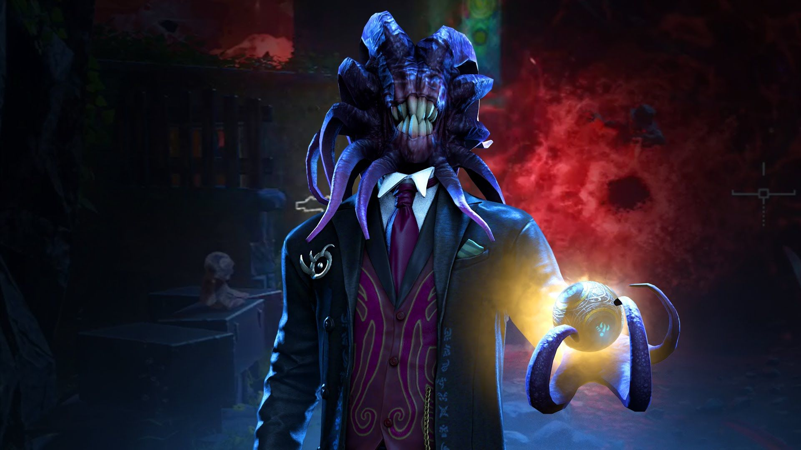
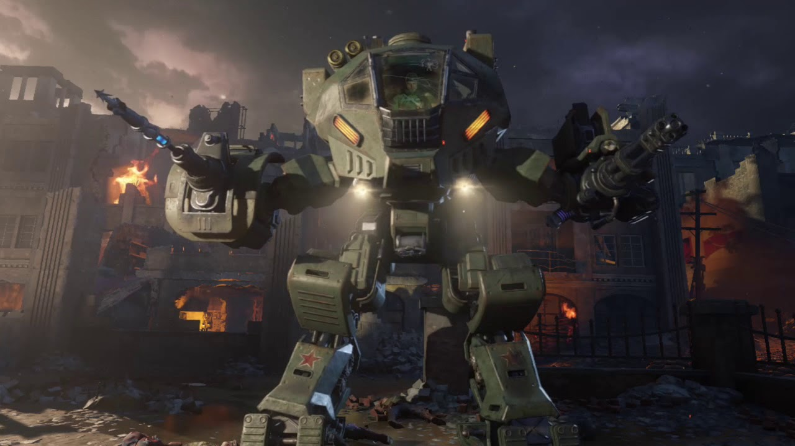

|  |
Shadow man
Shadow man es un ente oscuro que busca la llave de invocación para liberar el éter oscuro el cual esta lleno de criaturas llamadas apoticones, quiere sumergir a todos .en las tibnieblas, pero la tarea de nuestros jugadores es evitar que shadow man pueda hacer realidad sus planes malignos. Nos enfrentaremos a inumerables enemigos, panzers, arañas y margwas, también tendremos nuevas armas para defendernos de estos grandes enemigos pues vuelve al juego una de las grandes armas, la tundergun y el siervo apotiocon.
|
|  |
Nikolai
Es el ultimo jefe del mapa Gorod Krovi, derrotarlo no es nada fácil ya que el esta pilotando un robot de batalla con múltiples armas, mientras tendremos que esquivar a dragones, robots y por supuesto una gran horda de zombies furiosos. Sin duda este jefe es uno de los más difíciles que hemos tenido en toda la saga de Black Ops, derrotarlo es una gran hazaña que pocos han podido lograr, sin duda Nikolai es un personaje fuerte y cota la comunidad ama gracias a su gran carácter y amor al vodka.
|